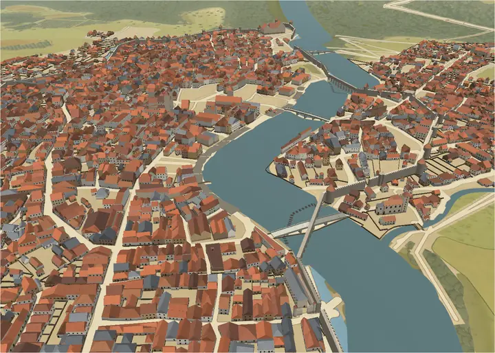

Medieval organic (Europe)
A medieval town grown by accretion: winding streets radiating from a market, narrow burgage plots under gabled timber houses, a parish church in each quarter.
- Plan
- organic
- Enclosure
- irregular
- Storeys
- 2–4
- Roof
- gable
Numbers and details
| Zone | People per ha | Frontage (m) | Plot depth (m) | Coverage |
|---|---|---|---|---|
| Core | 185 | 5.5–9 | 24–42 | 90–96% |
| Middle ring | 120 | 6.5–11 | 30–50 | 78–86% |
| Suburb | 55 | 7–13 | 30–60 | 64–74% |
| Village | 35 | 18–40 | 40–80 | 12–30% |
Home plans
- Nucleus
- market
- Fortification
- chosen by town size
- Pitch
- 38°
- Wall material
- timber
- Farm types
vierkanthofu-yardl-yard